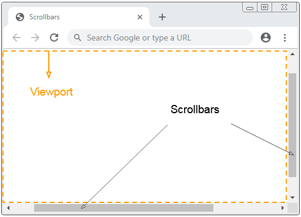
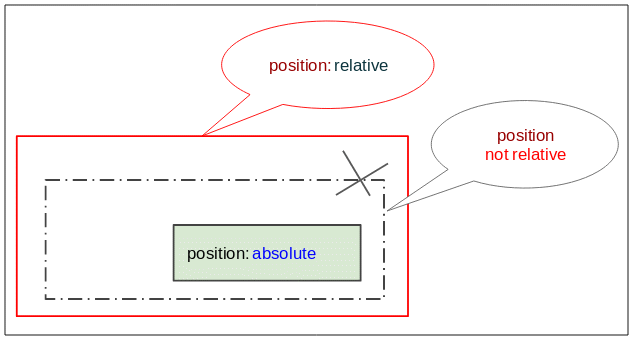

Position trong CSS được sử dụng để định vị vị trí hiển thị của các phần tử thẻ HTML và thường sử dụng để xây dựng CSS cho menu nhiều cấp, tooltip và một số chức năng khác liên quan đến vị trí.
Các vị trí trên 1 mặt phẳng như bạn đã biết bao gồm 4 vị trí chính: trên, dưới, trái, phải tương ứng ta sẽ có các vị trí Position như sau:
Tất nhiên, đây chỉ là những vị trí cơ bản nhất, khi thực hiện 1 layout, bạn sẽ phải căng chỉnh vị trí nhiều hơn nhiều bằng cách kết hợp cùng các thuộc tính Position trong CSS khác ví dụ như trong ảnh:
Thông thường chúng ta sẽ có 4 thuộc tính chính bao gồm: static, relative, fixed và absolute. Ngoài ra còn có các thuộc tính như: sticky và 2 thuộc tính khá thú vị khác là initial, inherit.
Position static hay vị trí mặc định, đồng nghĩa với việc vị trí của phần tử này được xác định theo quy tắc thông thường của các tài liệu.
Không thể sử dụng các thuộc tính CSS như: Top, Bottom, Left, Right để thiết lập vị trí cho phần tử đó.
Ví dụ:
<div style=”position:static; border:1px solid; padding:5px;”> This div element has {position: static}; </div> <br> <h3>CSS {position:static; left: 50px;}</h3> <div style=”position:static; left: 50px;”> This div element has {position: static} and {left: 50px} </div>
Phần tử được định vị bằng Position relative sẽ nằm ở vị trí tương đối so với vị trí static. Có thể sử dụng các CSS như: Top, Bottom, Left, Right để định vị vị trí của phần tử đó.
Ví dụ:
<h3>{position: relative;}</h3> <div style=”position: relative; width:250px;”> position: relative; width:250px; </div> <br> <h3>{position: relative; left:50px; top:50px;}</h3> <div style=”position: relative; left:50px; top:50px; width:250px;”> position: relative; width:250px; <br/> left:50px; top:50px; </div>
Phần tử được định vị bằng Position fixed sẽ có vị trí tương đối so với Viewport trên trình duyệt.
Ví dụ:
<!DOCTYPE html> <html> <head> <meta charset=”utf-8″/> <title>CSS Position</title> <style> div { background-color:yellow; padding: 5px; } </style> </head> <body> <h2>{position: fixed}</h2> <div style=”position:fixed; bottom:20px; right:15px;”> position:fixed; bottom:20px; right:15px; </div> <p>Content .. 1</p> <p>Content .. 2</p> <p>Content .. 3</<p> <p>Content .. 4</p> <p>Content .. 5</p> </body> </html>
Bạn có thể thu nhỏ cửa sổ trình duyệt của mình lại và kéo phóng to thu nhỏ, bạn sẽ thấy phần tử màu vàng sẽ thay đổi vị trí theo cách bạn thu phóng cửa sổ trình duyệt. Một cách nói khác: bạn đang thực hiện neo cố định 4 cạnh của phần tử với 4 cạnh của trình duyệt bằng dòng code
<div style=”position:fixed; bottom:20px; right:15px;”> position:fixed; bottom:20px; right:15px; </div>
Đối với một phần tử được định vị bằng Position absolute, phần tử sẽ tự động ưu tiên cho phần tử cha, ông gần nhất của chúng có chứa Position relative. Khi tìm thấy phần tử chứa Position relative, phần tử được định vị bằng Position absolute sẽ tự động tạo vị trí tương đối so với phần tử đó. Nếu không, phần tử định vị bằng Position absolute sẽ lấy vị trí tương đối so với Viewport trên trình duyệt của bạn.
Ví dụ:
<!DOCTYPE html> <html> <head> <meta charset=”utf-8″/> <title>CSS Position</title> </head> <body> <h2 class=”mb-3″>CSS {position:absolute}</h2> <div style=”position:relative; height:200px;border:1px solid red;”> Im a div {position:relative} (red). <div style=”border:1px solid green;”> Im a normal div (green). <div style=”position: absolute; bottom:10px; right:15px; background:yellow;”> position: absolute; bottom:10px; right:15px; </div> </div> </div> </body> </html>
Khi bạn để nguyên phần tử màu vàng sẽ thiết lập vị trí tương đối so với phần tử cha mau đỏ. Đến khi bạn thu nhỏ cửa sổ lại và chèn một đoạn dưới của phần tử màu đỏ, lúc này phần tử màu vàng sẽ thiết lập vị trí tương đối của nó so với Viewport của trình duyệt.
Phần tử được định vị bằng Position sticky sẽ thay đổi vị trí dựa trên thao tác cuộn của người dùng. Với Position sticky, phần tử sẽ linh động chuyển từ trạng thái relative sang fixed và ngược lại.